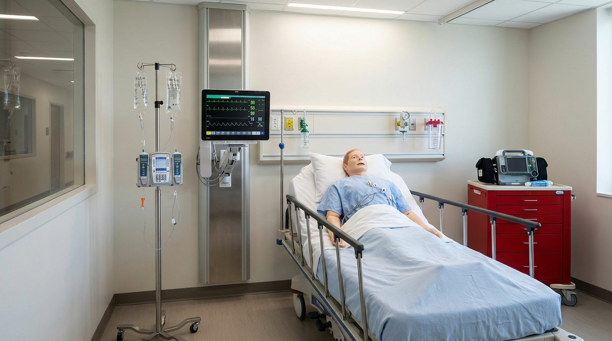
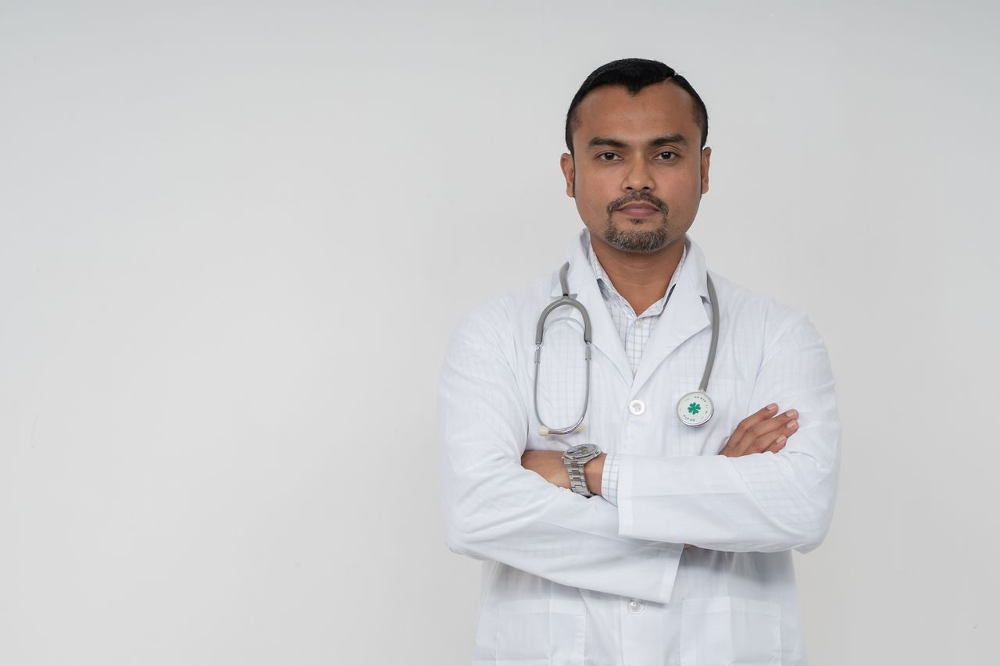
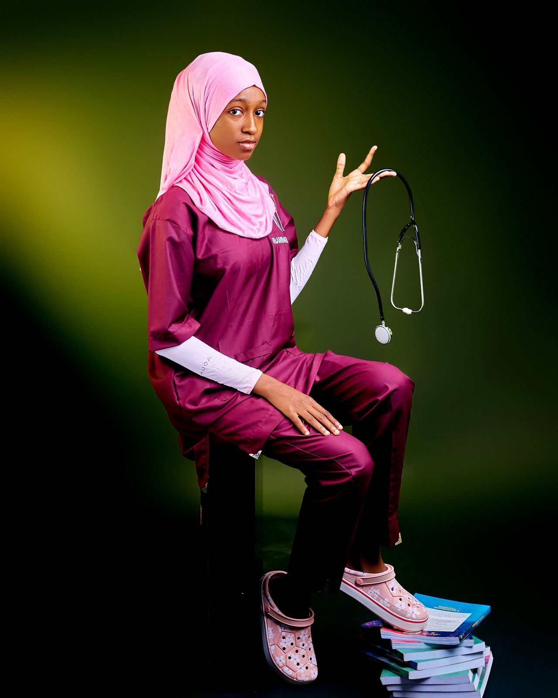
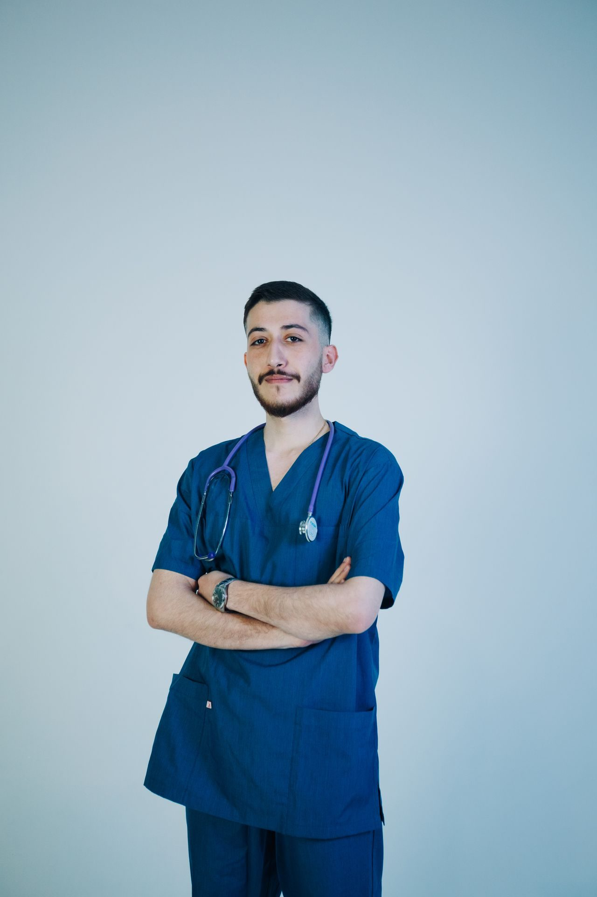

Critical Care
Dr. Kavita Deshpande
Ph.D. Nursing • 19 yrs ICU & Medical-Surgical Curriculum Lead.
Train inside hospital-grade ICU simulation bays, master emergency protocols, and launch a borderless healthcare career.
Scroll to ExploreSelect a clinical career track to explore realistic Indian & international salary benchmarks, work environments, and exact qualifying courses.
Lead patient assessment, medication titration, post-operative recovery, and interdisciplinary care planning across tertiary wards, maternal units, and international NHS/Gulf hospitals.
Domestic tertiary hospitals start at INR 3.6–5.4 LPA; UK NHS & Ireland RN pathways reach GBP 29k–36k.
Operate mechanical ventilators, hemodynamic arterial lines, continuous renal replacement dialysis consoles, and crash-cart defibrillators alongside intensivists.
High-demand specialty postings across cardiac, neuro, and multi-organ transplant ICUs.
Serve as the first clinical responder inside ALS ambulances and hospital trauma bays—executing spinal immobilization, airway rescue, triage, and pre-hospital defibrillation.
Immediate recruitment with 108 EMS fleets, airport trauma units, and corporate emergency response teams.
Acquire diagnostic digital X-rays, multi-slice CT scans, MRI sequences, and fluoroscopy imaging while upholding ALARA radiation safety protocols.
Strong hiring across hospital radiology wings and standalone NABL imaging centres.
Prepare sterile laparoscopic and cardiac surgical suites, calibrate anaesthesia workstations, manage autoclaving, and assist surgeons intra-operatively.
Essential surgical team specialists in orthopaedic, cardiac, and robotic surgery hospitals.
Perform hematology, clinical biochemistry, microbiology cultures, histopathology staining, and automated immunoassay diagnostics powering clinical decisions.
Placements across NABL pathology networks, blood banks, and hospital central labs.
Manage hospital inpatient formularies, verify prescription dosages, maintain cold-chain vaccines, and counsel patients on safe medication adherence.
Steady openings in hospital pharmacies, retail wellness chains, and drug logistics.
Tap any numbered clinical pin on the simulation bay below to inspect the hospital-grade apparatus students master before ward postings.

Students program precision micro-drip vasoactive drug infusions, calculate pediatric dosage rates, and clear occlusion alarms under timed OSCE checklists.
Learn bedside ethics and diagnostic sharpness directly from educators with decades of ICU, midwifery, and emergency leadership.
Ph.D. Nursing • 19 yrs ICU & Medical-Surgical Curriculum Lead.

MD Pathology • Head of DMLT & Clinical Biochemistry Labs.
M.Sc. OBG Nursing • 16 yrs Maternal & Neonatal Care Mentor.
AHA ACLS Instructor • 14 yrs Pre-Hospital Emergency Specialist.
Awarded automatically at admission to top academic scorers in 10+2 PCB or university entrance assessments.
Dedicated financial support for children of registered nurses, paramedics, ASHA workers, and defence medics.
On-campus nodal desk assists with NSP/SSP post-matric scholarships and collateral-free Vidya Lakshmi loans.
“Practicing labor-room emergencies on obstetric simulators before my actual OBG posting completely eliminated first-day nerves.”
“Coming from a non-biology stream, I was worried about anatomy—our museum models and weekend mentor clinics turned it into my highest score.”

“The hostel feels safe and peaceful even after late evening hospital shifts, and our study lounge is open whenever OSCE exams approach.”

“Every Friday is a live trauma triage simulation outdoors with real stretchers, spine boards, and radio handover drills.”

“Our haematology and microbiology practicals run on automated analyzers identical to NABL-accredited hospital labs.”
“Shadowing surgical teams in sterile OT bays taught me instrument readiness, airway prep, and calm teamwork under pressure.”
INC and State Council seats are strictly capped per clinical batch. Lock your merit review window before early-bird scholarship rounds close.